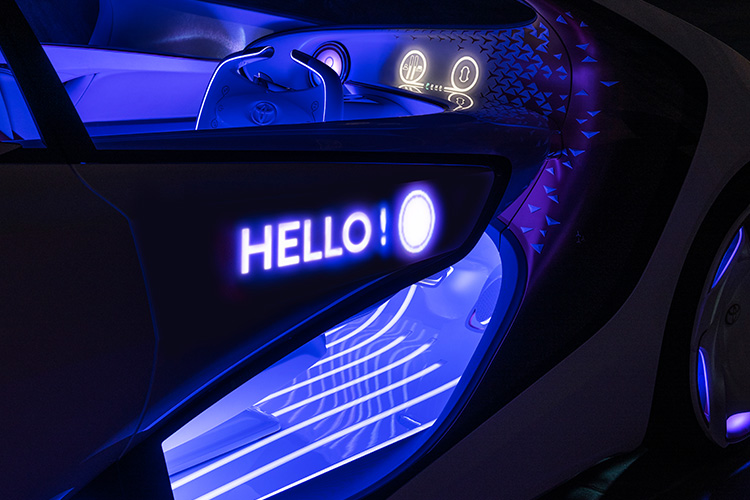
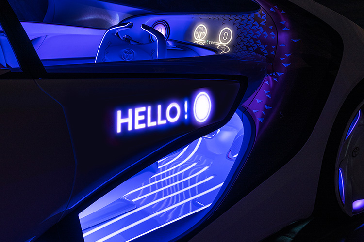

Toyota Concept-I Series
Toyota Concept-i and its forward-thinking UX hold a mirror up to a future that is warm, friendly, engaging and, most of all—fun. Without further ado, meet Concept-i.
Toyota Concept-i and its forward-thinking UX hold a mirror up to a future that is warm, friendly, engaging and, most of all—fun. Without further ado, meet Concept-i.


While we can't predict the future, we can inspire it. So what will our cars look like and how will they function? Will we drive them or will they drive us? That seems to be the question on everyone's mind. Well, we have an idea. Cars are for people who want to go to more places safely and efficiently
LEARN MOREConcept-i follows our belief that vehicles shouldn't start with technology—they should start, and end, with the experience of the people who use them. Therefore, Concept-i was built from the inside out, with a focus on making it immersive, energetic and, most importantly—approachable.
LEARN MORE

At the 2016 Consumer Electronics Show (CES) in Las Vegas, Toyota is demo’ing it’s idea of the “Future of Mobility”. As has become plainly obvious over the last couple years, Toyota believes plug-in vehicles will fail and that fuel cell EV’s are the future. While other companies are at CES showing off battery based EV’s, Toyota is sticking with their fuel cells.
LEARN MORE

Its minimal yet artful interior is designed to help support its user experience. Lines flow from the center of the dashboard throughout the vehicle, while Yui travels around them, using light, sound and even touch to communicate critical information. It utilizes a single wide-screen, 3-D, full-color Head-Up Display that blends into an interior that is clean and uncluttered.
LEARN MOREIn the future, we envision you, Yui and the car working together—like teammates. Now, here comes the really fun part. Thanks to the car's advanced automated driving technologies, people with all levels of ability can enjoy the ride. You're still in charge of the car. However, through biometric sensors throughout the car, Concept-i can detect what you're feeling. That information then gets analyzed by the car's AI. That's when the automated features kick in.

Check out the recent unveiling of Toyota Concept-i at CES 2017. And if you want even more info, check out our recent press release.
JOIN NOW
Our vision for the car of the future starts with "Yui."
Designed from the inside out, Toyota Concept-i is an exciting glimpse into a future mobility that is warm, friendly and revolves around you.
 
